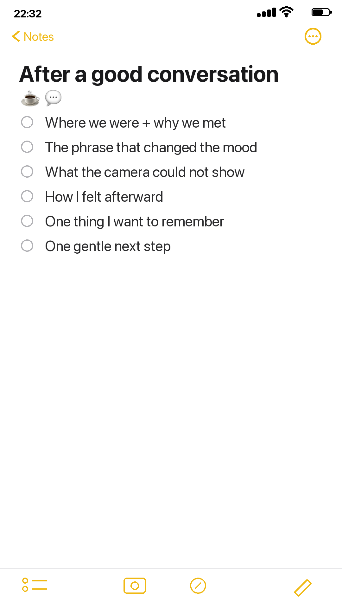

A good conversation often disappears faster than a photograph because its meaning lives in tone, pauses, and small phrases. Save a few telling details in a private phone note before they flatten into “we had a lovely talk.”

Begin with context
Write where you were, roughly when the conversation happened, and what brought you together. Include an ordinary physical detail: the unfinished coffee, a walk around the block, the chair someone chose, or the weather outside.
Context gives later memories somewhere to land. It is often more useful than trying to reconstruct every sentence in order.
Save the words that changed the conversation
Note one exact phrase only if you are confident you remember it. Otherwise label it as the idea or meaning you recall. Record the question that opened something up, the answer that surprised you, and the subject you nearly skipped.
Do not turn the note into a transcript. A few turning points preserve the shape of the exchange while respecting the other person’s privacy.
Notice what was communicated without words
Write down one gesture, pause, change in voice, or moment of shared laughter. Note whether the conversation felt easier at the beginning or the end. These observations help explain why a simple sentence mattered.
If the note later becomes a journal page, pair it with a neutral free floral image rather than a literal portrait. The page can preserve the feeling without exposing someone else’s private story.
Record your own response
What did you understand differently afterward? What do you want to remember, ask again, or do next? Write one feeling without explaining it away. Relief, tenderness, discomfort, hope, and uncertainty can all belong in the same note.
If you promised to send something or follow up, move that action to your normal task system. The memory note should not become a place where commitments are forgotten.
Protect the people inside the memory
Keep sensitive details out of a shared cloud note or visible scrapbook page. Use initials, summarize private information, or write only about your own response. A meaningful memory does not require publishing another person’s vulnerability.
Separate what belongs to you from what belongs to the other person. Your own reaction, the setting, and the lesson you carried away are usually safe to preserve. A diagnosis, confession, disagreement, or third person’s story may need to stay out of the page entirely.
Turn the note into a small page
Use a simple four-part layout: date and place at the top, one safe remembered phrase in the center, a small atmospheric image beside it, and your own reflection at the bottom. Leave space around the words. The visual should hold the mood, not identify or explain the other person.
When you make the page, include the date, place, one safe phrase, and the change you felt afterward. Those four pieces are usually enough to bring the conversation back without preserving every detail.